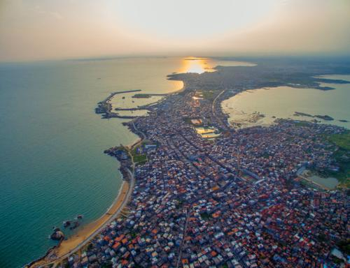

| Prefect Travrling | 首页 | 地区介绍 | 景区介绍 | ||||||||
|
|||||||||||
| 崇武大岞一日游成半日游,风雨无情人有情 |
| 2018-06-10 00:00 |
| 往年的清明小长假，我是很少组织活动的，考虑的因素很多。其一，清明节大多数人要回家扫墓祭祖，抽不出时间；其二，由于闽南地区的风俗，清时节不适宜组织外出活动；其三，清明小长假的交通容易拥堵。所以，每年有队员问我清明假期要不要组织活动，都毫不犹豫地回答说，不考虑组织。 但今年却是个例外，因为问的人太多了，我是个心软的人，经不起大家一再的咨询，因此抛开各种因素，破天荒地靠前次在清明节组织活动。天气预报说是6号会下雨，还会降温，但我别无选择，因为5号清明节当天，和7号返程都是交通高峰期，不想被堵在路上的我，只能挑在小长假的第二天来组织活动。 我选了三条线路让大家参考，多数队员选择了惠安崇武大岞这条线路。其实大多数队员的要求并不高，去哪里玩也并不重要，重要的是有组织活动就行。 |
|  |
早早地就报满，直到临出发前一天，还有许多队员加入，后一统计，竟然有近40个队员报名参加此次的惠安崇武大岞之旅。这其中，还有两位国际友人。
每一次活动出发前一天，我都会建微信群，并发布活动通知，告知活动的一些注意事项，提醒大家不要迟到。这次考虑到会下雨降温，而且海边风大，我还特别提醒大家准备好足够的装备物资。
也许前一阵子天气太热了，而且此时已经四月初了，在南方已是初夏，大家心想再如何下雨降温，也不至于太冷吧。于是，大多数人并不在意天气变化，还很兴奋地穿着短袖短裙，想来一次海边的初夏浪漫之旅呢。 |
| 上一篇:和平古镇—福建美的"城堡式古镇" |
| 下一篇：《大鱼海棠》取景地超详攻略 |
PREFECT TRAVLING |
 |
地址：江苏省苏州市张家港市福新路1号 电话：13601475824 邮箱：130638633@qq.com QQ： 1370638633 |